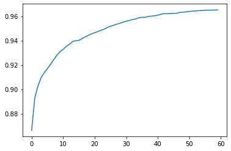

required libraries
from fastai.vision.all import *This post will cover how to classify handwritten digits of the MNIST dataset using a simple neural network. At the same time, I will be taking a stab at the Kaggle Digit Recognizer contest.
Credits: I will be working off of chapter 4 of the fast.ai book, which covers binary classification of 3’s and 7’s. Other resources are linked.
from fastai.vision.all import *First, we will have to import the MNIST dataset itself. We can import it using the fast.ai library (path = untar_data(URLs.MNIST)), but I will download the dataset from kaggle instead.
If you are following along and haven’t set up the kaggle API yet, do so by following along the README of the official repo. You will need an account to do so. After everything is set up, we can run the following code block:
!kaggle competitions download -c digit-recognizerDownloading digit-recognizer.zip to /home/jupyter/projects/digit-classifier
0%| | 0.00/15.3M [00:00<?, ?B/s]
100%|███████████████████████████████████████| 15.3M/15.3M [00:00<00:00, 161MB/s]Note that in Jupyter notebooks, the exclamation mark ! is used to execute shell commands. The dataset should be downloaded in your project directory as a zip file. Run the following code block to extract the contents to a file named MNIST_dataset:
!unzip digit-recognizer.zip -d MNIST_datasetArchive: digit-recognizer.zip
inflating: MNIST_dataset/sample_submission.csv
inflating: MNIST_dataset/test.csv
inflating: MNIST_dataset/train.csv Let’s take a look at test.csv (the test set) and train.csv (the training set):
ds_path = Path("./MNIST_dataset")# test.csv
df_test = pd.read_csv(ds_path/"test.csv")
df_test.head(3)| pixel0 | pixel1 | pixel2 | pixel3 | pixel4 | pixel5 | pixel6 | pixel7 | pixel8 | pixel9 | ... | pixel774 | pixel775 | pixel776 | pixel777 | pixel778 | pixel779 | pixel780 | pixel781 | pixel782 | pixel783 | |
|---|---|---|---|---|---|---|---|---|---|---|---|---|---|---|---|---|---|---|---|---|---|
| 0 | 0 | 0 | 0 | 0 | 0 | 0 | 0 | 0 | 0 | 0 | ... | 0 | 0 | 0 | 0 | 0 | 0 | 0 | 0 | 0 | 0 |
| 1 | 0 | 0 | 0 | 0 | 0 | 0 | 0 | 0 | 0 | 0 | ... | 0 | 0 | 0 | 0 | 0 | 0 | 0 | 0 | 0 | 0 |
| 2 | 0 | 0 | 0 | 0 | 0 | 0 | 0 | 0 | 0 | 0 | ... | 0 | 0 | 0 | 0 | 0 | 0 | 0 | 0 | 0 | 0 |
3 rows × 784 columns
# train.csv
df_train = pd.read_csv(ds_path/"train.csv")
df_train.head(3)| label | pixel0 | pixel1 | pixel2 | pixel3 | pixel4 | pixel5 | pixel6 | pixel7 | pixel8 | ... | pixel774 | pixel775 | pixel776 | pixel777 | pixel778 | pixel779 | pixel780 | pixel781 | pixel782 | pixel783 | |
|---|---|---|---|---|---|---|---|---|---|---|---|---|---|---|---|---|---|---|---|---|---|
| 0 | 1 | 0 | 0 | 0 | 0 | 0 | 0 | 0 | 0 | 0 | ... | 0 | 0 | 0 | 0 | 0 | 0 | 0 | 0 | 0 | 0 |
| 1 | 0 | 0 | 0 | 0 | 0 | 0 | 0 | 0 | 0 | 0 | ... | 0 | 0 | 0 | 0 | 0 | 0 | 0 | 0 | 0 | 0 |
| 2 | 1 | 0 | 0 | 0 | 0 | 0 | 0 | 0 | 0 | 0 | ... | 0 | 0 | 0 | 0 | 0 | 0 | 0 | 0 | 0 | 0 |
3 rows × 785 columns
Now that we downloaded the data, we need to shape it for training and validating.
To train our model, we need to separate and normalize the independent (pixels) and dependent (label) variables. The labels will be represented using one hot encoding.
X_train = tensor(df_train.drop(labels = ['label'],axis = 1)) / 255.0y_train_numeric = df_train['label']
rows = np.arange(y_train_numeric.size)
y_train = tensor(np.zeros((y_train_numeric.size, 10)))
y_train[rows, y_train_numeric] = 1
X_train.shape, y_train.shape(torch.Size([42000, 784]), torch.Size([42000, 10]))X_train.shape and y_train.shape tells us that we have 42000 digits in our dataset, with each digit having 784 pixels. We will use tensors to take advantage of faster GPU computations.
We want to create a Pytorch Dataset, which is required to return a tuple of (x,y) when indexed. Python provides a zip function which, when combined with list, can do this easily:
ds = list(zip(X_train,y_train))
ds[0]
# output removed for readabilityNext, we want to split our dataset ds into a training and validation set:
train, val = torch.utils.data.random_split(ds,[32000, 10000])Later, we will be using stochastic gradient descent, which requires that we have “mini-batches” of our dataset. We can create a DataLoader from our train dataset to do so:
dl = DataLoader(train, batch_size=256)
xb,yb = first(dl)
xb.shape,yb.shape(torch.Size([256, 784]), torch.Size([256, 10]))We can do the same for our validation (val) dataset:
valid_dl = DataLoader(val, batch_size=256)Now that our data is ready, we can start training our classification model. We will start with a linear model, then add some non-linearity to it!
First, we must randomly initialize the bias and all weights for each pixel. Since we have 10 labels (one for each digit), there must be 10 outputs, so our weights matrix is of size 784x10.
def init_params(size, std=1.0): return (torch.randn(size)*std).requires_grad_()
weights = init_params((784,10))
bias = init_params(1)The prediction given a tensor x is
\[\text{prediction} = x \cdot \text{weights} + \text{bias}.\]
def linear1(xb): return xb@weights + biasTo calculate a gradient, we need a loss function. Since there are more than 2 labels, we will use cross entropy loss, which is related to the softmax function instead of a sigmoid function (which is used for binary classification).
def mnist_loss(xb, yb):
loss = nn.CrossEntropyLoss()
return loss(xb, yb)For testing and demonstration purposes, let’s work with a smaller batch than the ones created when shaping our data.
batch = X_train[:4]
batch.shapetorch.Size([4, 784])preds = linear1(batch)
predstensor([[ -0.5287, 12.6047, -9.0290, -1.7505, 3.7686, 18.8489, -1.8141,
-12.2232, -5.1421, -6.6316],
[ 18.8942, 10.7898, 9.2573, 7.9989, -1.2884, 19.0238, -5.8788,
6.5045, -10.2431, 5.5865],
[ 6.3639, 14.0687, 0.7705, -1.3580, 1.4220, 7.3108, -7.4359,
-6.8101, -5.9212, 23.7016],
[-14.7847, 3.0711, -0.6092, 2.2720, -1.1361, 3.7617, 5.1197,
5.3868, -1.5228, -7.6523]], grad_fn=<AddBackward0>)loss = mnist_loss(preds, y_train[:4])
losstensor(5.9773, grad_fn=<DivBackward1>)Now we can calculate the gradients:
loss.backward()
weights.grad.shape,weights.grad.mean(),bias.grad(torch.Size([784, 10]), tensor(2.4328e-10), tensor([5.9605e-08]))The following function combines the above code and generalizes to models other than linear1.
def calc_grad(xb, yb, model):
preds = model(xb)
loss = mnist_loss(preds, yb)
loss.backward()calc_grad(batch, y_train[:4], linear1)
weights.grad.mean(),bias.grad(tensor(4.8657e-10), tensor([1.1921e-07]))Using the calculated gradients, we can update the weights for each epoch. We need to specify a learning rate and reset the gradients to 0, since loss.backward actually adds the gradients of loss to any gradients that are currently stored.
lr = 1.
for p in weights,bias:
p.data -= p.grad*lr
p.grad.zero_()Finally, we can define a function that trains the model for one epoch:
def train_epoch(model, params, lr=1):
for xb,yb in dl:
calc_grad(xb, yb, model)
for p in params:
p.data -= p.grad*lr
p.grad.zero_()We also probably want to check the accuracy of our model. The label that the model predicts is the label with the highest activation:
def batch_accuracy(xb, yb):
label = torch.argmax(xb, dim=1)
y_truth = torch.argmax(yb, dim=1)
correct = y_truth == label
return correct.float().mean()batch_accuracy(linear1(batch), y_train[:4])tensor(0.)To get the accuracy for the whole epoch, we must call batch_accuracy with batches of the validation dataset, then take the mean over all batches.
def validate_epoch(model):
accs = [batch_accuracy(model(xb), yb) for xb,yb in valid_dl]
return round(torch.stack(accs).mean().item(), 4)Finally, we can see if our code works by checking if the accuracy improves!
params = weights, bias
for i in range(40):
train_epoch(linear1, params)
print(validate_epoch(linear1), end=' ')0.8213 0.8532 0.8661 0.8736 0.8769 0.8808 0.8848 0.8869 0.8895 0.8914 0.8929 0.894 0.8949 0.8964 0.8973 0.8977 0.8978 0.8979 0.8981 0.8986 0.8998 0.9 0.9004 0.9016 0.9017 0.9027 0.9027 0.9032 0.9037 0.9047 0.9053 0.9058 0.9061 0.9062 0.9061 0.9062 0.906 0.9061 0.906 0.9063 nn.Linear does the same thing as our init_params and linear1 functions together. Also, fastai’s SGD class provides us with functions that takes care of updating the parameters and reseting the gradients of our model. By replacing some code, we can boil the training portion of our MNIST classifer down to the following:
def mnist_loss(xb, yb):
loss = nn.CrossEntropyLoss()
return loss(xb, yb)
def calc_grad(xb, yb, model):
preds = model(xb)
loss = mnist_loss(preds, yb)
loss.backward()
def train_epoch_simple(model):
for xb,yb in dl:
calc_grad(xb, yb, model)
opt.step()
opt.zero_grad()
def train_model(model, epochs):
for i in range(epochs):
train_epoch_simple(model)
print(validate_epoch(model), end=' ')
linear_model = nn.Linear(28*28,10)
opt = SGD(linear_model.parameters(), lr=1)
train_model(linear_model, 20)0.8983 0.9057 0.9092 0.9113 0.9143 0.9149 0.9154 0.9154 0.9162 0.9161 0.9166 0.9167 0.9166 0.9166 0.9164 0.9169 0.917 0.9173 0.9173 0.9175 Fast.ai provides us with Learner.fit, which we can use instead of train_model to significantly reduce the amount of code we need to write. To use the function, we must create a Learner, which requires a DataLoaders of our training and validation datasets:
dls = DataLoaders(dl, valid_dl)Then, we pass in DataLoaders, the model, the optimization function, the loss function, and optionally any metrics to print into the Learner constructor to create one:
learn = Learner(dls, nn.Linear(28*28,10), opt_func=SGD,
loss_func=mnist_loss, metrics=batch_accuracy)Finally, we can call Learner.fit:
learn.fit(10, lr=1)| epoch | train_loss | valid_loss | batch_accuracy | time |
|---|---|---|---|---|
| 0 | 0.413918 | 0.365917 | 0.897400 | 00:00 |
| 1 | 0.326721 | 0.337396 | 0.905100 | 00:00 |
| 2 | 0.302027 | 0.325679 | 0.908500 | 00:00 |
| 3 | 0.289524 | 0.319092 | 0.910000 | 00:00 |
| 4 | 0.281248 | 0.314855 | 0.912800 | 00:00 |
| 5 | 0.275084 | 0.311911 | 0.913200 | 00:00 |
| 6 | 0.270192 | 0.309764 | 0.913500 | 00:00 |
| 7 | 0.266153 | 0.308146 | 0.913900 | 00:00 |
| 8 | 0.262723 | 0.306901 | 0.914300 | 00:00 |
| 9 | 0.259748 | 0.305928 | 0.914900 | 00:00 |
To expand upon our model, we can add another layer on top of what we have now. However, mathematically speaking, the composition of two linear functions is another linear function. Therefore, stacking two linear classifiers on top of each other is equivalent to having just one linear classifier.
Therefore, we must add some non-linearity between linear layers. We often do this by through activation functions; a common one is the ReLU function:
x = np.linspace(-5,5,100)
y = np.maximum(0, x)
plt.plot(x, y)
nn.Sequential creates a module that will call each of the listed layers or functions.
Our first layer takes in 784 inputs (pixels) and outputs 60 numbers. Those 60 numbers are then each passed into the ReLU function before going into the second layer. The second layer has 10 outputs, which as before, is the probability of each digit being the lable.
simple_net = nn.Sequential(
nn.Linear(784,100),
nn.ReLU(),
nn.Linear(100,10)
)We can train this model using Learner.fit as well (we are using more epochs and smaller learning rate, since it is a larger model):
learn = Learner(dls, simple_net, opt_func=SGD,
loss_func=mnist_loss, metrics=batch_accuracy)
learn.fit(60, lr=0.1)The output is ommitted to save room; the training process is recorded in learn.recorder, with the table of output stored in the values attribute, so we can plot the accuracy over training as:
plt.plot(L(learn.recorder.values).itemgot(2))
# final accuracy
learn.recorder.values[-1][2]0.9652000069618225Though our very basic model is far from perfect, we can still submit it to the competition! Recall that we stored the test.csv data into the df_test DataFrame. We need to first normalize the pixels then plug it into our model:
X_test = tensor(df_test)/ 255.0x_val = simple_net(X_test)
y_pred = torch.argmax(x_val, dim=1)
y_pred = y_pred.tolist()Finally, we can create a submission file in our current directory:
with open("submission.csv", 'w+') as f :
f.write('ImageId,Label\n')
for i in range(len(y_pred)) :
f.write("".join([str(i+1),',',str(y_pred[i]),'\n']))Then submit to Kaggle!
!kaggle competitions submit -c digit-recognizer -f submission.csv -m "First Attempt"100%|█████████████████████████████████████████| 208k/208k [00:01<00:00, 165kB/s]
Successfully submitted to Digit Recognizer